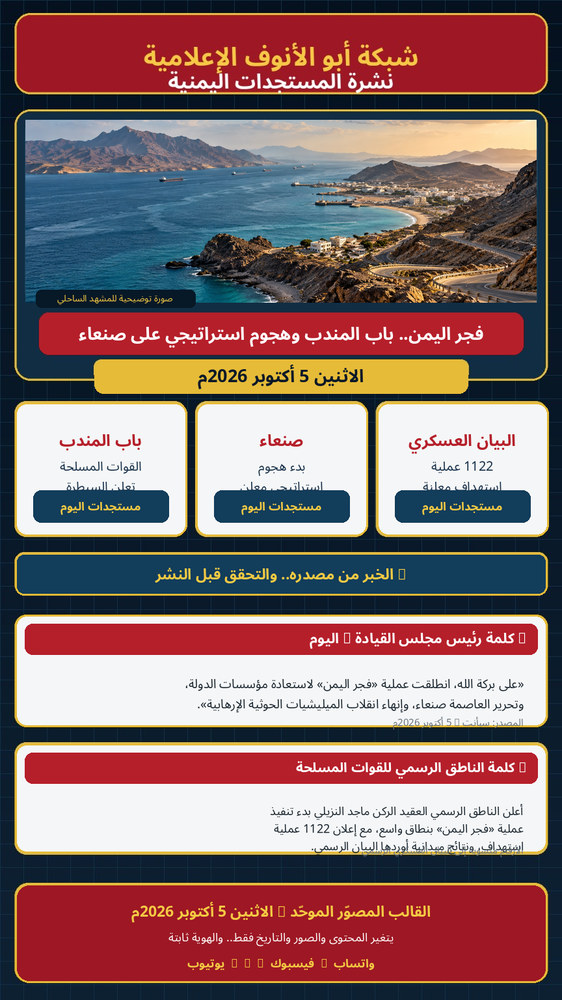

القالب المصوّر موحّد يومياً؛ المتغير هو التاريخ والمحتوى والصور والعناوين والمصادر. الصورة الرئيسية هنا توضيحية وليست صورة ميدانية من أحداث اليوم.
أعلن رئيس مجلس القيادة الرئاسي رشاد محمد العليمي، اليوم الاثنين، انطلاق عملية «فجر اليمن» لاستعادة مؤسسات الدولة وتحرير العاصمة صنعاء وإنهاء انقلاب الحوثيين. كما تابع سير العملية مع قيادات الدولة والقيادات العسكرية.
أعلنت القوات المسلحة، وفق بيان الناطق الرسمي، السيطرة على باب المندب ومطار ذوباب غربي تعز، وقطع الطريق الرابط بين ذوباب والمخا. وتُعرض هذه المعلومات بوصفها إعلاناً رسمياً من الجانب الحكومي؛ فيما تستمر التغطيات الدولية في الإشارة إلى استمرار القتال في المنطقة.
أعلن الناطق الرسمي باسم القوات المسلحة، العقيد الركن ماجد النزيلي، بدء تنفيذ «هجوم استراتيجي» على صنعاء، وفق ما نقلته قناة اليمن ووسائل إعلام أخرى.
قالت القوات المسلحة في بيانها إنها نفذت 1122 عملية استهداف دقيقة، وأعلنت تحييد 1747 من عناصر الحوثيين وتدمير أو إعطاب 364 آلية ومعدة ووسيلة نقل وإمداد عسكرية. هذه الأرقام منسوبة إلى البيان الرسمي وليست تحققاً ميدانياً مستقلاً.
أعلن المتحدث باسم تحالف دعم الشرعية مشاركة 100 طائرة مقاتلة في عملية «فجر اليمن» وإعلان تدمير 324 هدفاً عالي القيمة، مع استمرار الإسناد الجوي. هذه أرقام منسوبة إلى بيان التحالف.
المصدر: وكالة الأنباء اليمنية سبأ، 5 أكتوبر 2026م.
أعلن الناطق الرسمي العقيد الركن ماجد النزيلي بدء تنفيذ عملية «فجر اليمن» بنطاق واسع، ثم أعلن بدء هجوم استراتيجي على صنعاء، فيما أورد البيان العسكري حصيلة 1122 عملية استهداف ونتائج ميدانية منسوبة إلى القوات المسلحة.
ملاحظة: هذا تلخيص تحريري للمضمون الرسمي، وليس تفريغاً حرفياً كاملاً.
🟢 البيانات الرسمية: منسوبة إلى الجهات التي أصدرتها.
🟡 الأرقام العسكرية: منسوبة إلى بيان القوات المسلحة/التحالف.
🔵 التطورات الميدانية المتنازع عليها: تُعرض بصيغة «أعلنت القوات» أو «وفق مصادر»، ولا تُقدّم كتحقق مستقل.